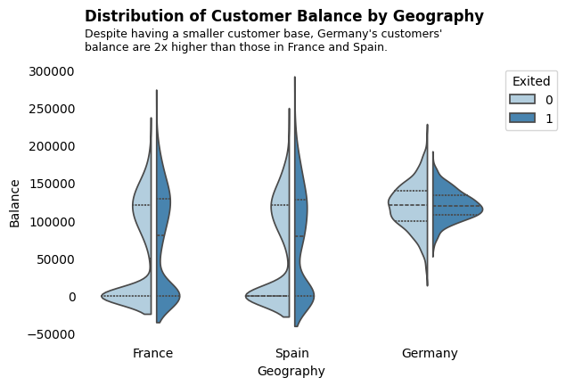
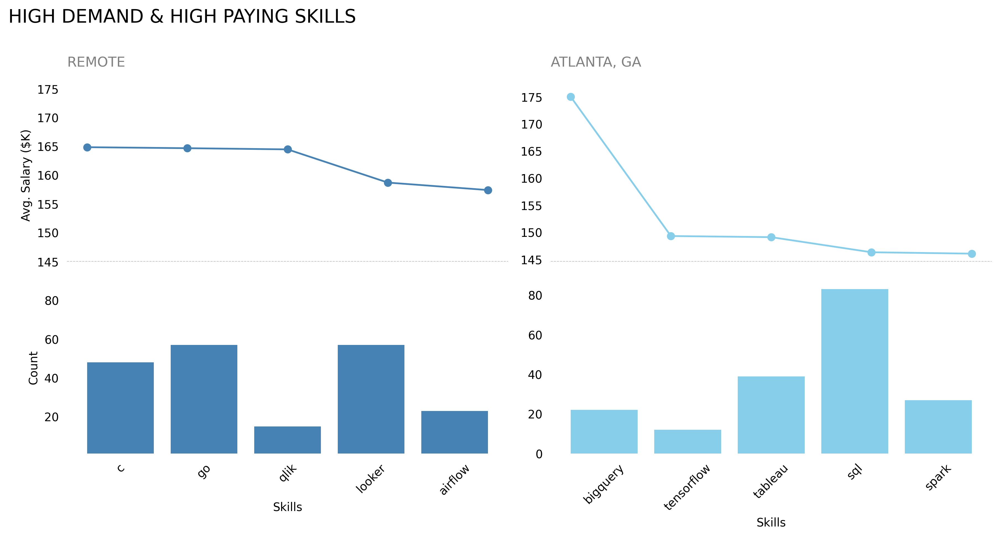

Sentiment Analysis of Restaurant Reviews:
A Predictive Model

Sentiment analysis of restaurant reviews provides valuable insights into customer satisfaction, identifies trends, improves service, informs marketing strategies, and helps analyze competition. For this project, I used Kaggle's dataset containing real restaurant reviews with labels indicating whether the customer liked or disliked the restaurant. To prepare the text data for machine learning models, I applied text preprocessing techniques such as tokenization, lemmatization, stop word removal, and part of speech tagging. Next, I trained and evaluated the data using 5 different algorithms to classify customer reviews as positive or negative. Ultimately, the Navies Bayes emerged as the champion model. Lastly, I integrated model into a Streamlit Web Application to predict customer sentiment based on new reviews.
Natural Language Processing
Text Preprocessing
Lemmatization
Tokenization
Stop Word Removal
Naive Bayes
Model Pipelines
Model Deployment
Python
Streamlit
Bank Churn Prediction

The project aimed to address the issue of high customer churn in Euorprean banks, which negatively impacts revenue and growth. The data obtain from Kaggle. By developing a customer churn prediction model, I sought to proactively identify customers at risk of leaving. Through exploratory data analysis, I discovered that older customers, inactive customers, and those with fewer products were more likely to churn. Additionally, Germany exhibited the highest churn rate compared to France and Spain. To predict churn, I trained various classification models (decision tree, random forest, XGBoost) on historical customer data and evaluated their performance using the F1 score. The XGBoost model emerged as the top performer, achieving an F1 score of 0.77, indicating a strong balance between precision and recall in identifying true churners and avoiding false positives.
XGBoost
decision tree
random forest
Python
Pandas
Matplotlib
Numpy
Seaborn
Scikit
Evaluating A/B Test Effectiveness in Ads Marketing
A/B testing is a powerful tool for businesses to make informed decisions based on data. This data is the result of an A/B test where a majority of users were shown ads while a smaller group saw a Public Service Announcement (PSA). The goal was to determine if the ads were successful, their potential revenue, and if the differences between the groups were statistically significant. A Chi-square Test if Independence found that the ads significantly increased conversions by 43% compared to the PSA group, indicating a strong positive impact.
Hypothesis Testing
Chi-square Test of Independence
A/B Testing
Pandas
Matplotlib
Numpy
Seaborn
Scikit
Exploratory Data Analysis of
the Data Job Market

The goal of this project is to gain a comprehensive understanding of the data science landscape, particularly regarding salary expectations and required skillsets, a thorough analysis of current job postings is a advantageous! I'll be leveraging the power of SQL to unlock valuable insights from job postings specifically, by analyzing salary trends in 2023 to comprehend the typical compensation range for Data Scientists and examining job descriptions to identify the most sought-after skills for success in this field.
SQL
Exploratory Data Analysis
PostgresSQL
Visio Studio Code
Python
Git & Github
Data Cleaning & Exploratory Data Analysis of Vehicle Sales
This vehicle dataset provides in-depth details on each vehicle (make, model, year, features) alongside sales information (price, date), and estimated market values to help us track market trends. However, some cleaning is required before predicting on this dataset. Issues discovered through early exploratory analysis
includes: duplicated categorical values with different formats (ex. Toyota vs toyota), data entry errors with values placed in the wrong columns, and more.
Python
Exploratory Data Analysis
Data Cleaning
Feature Engineering